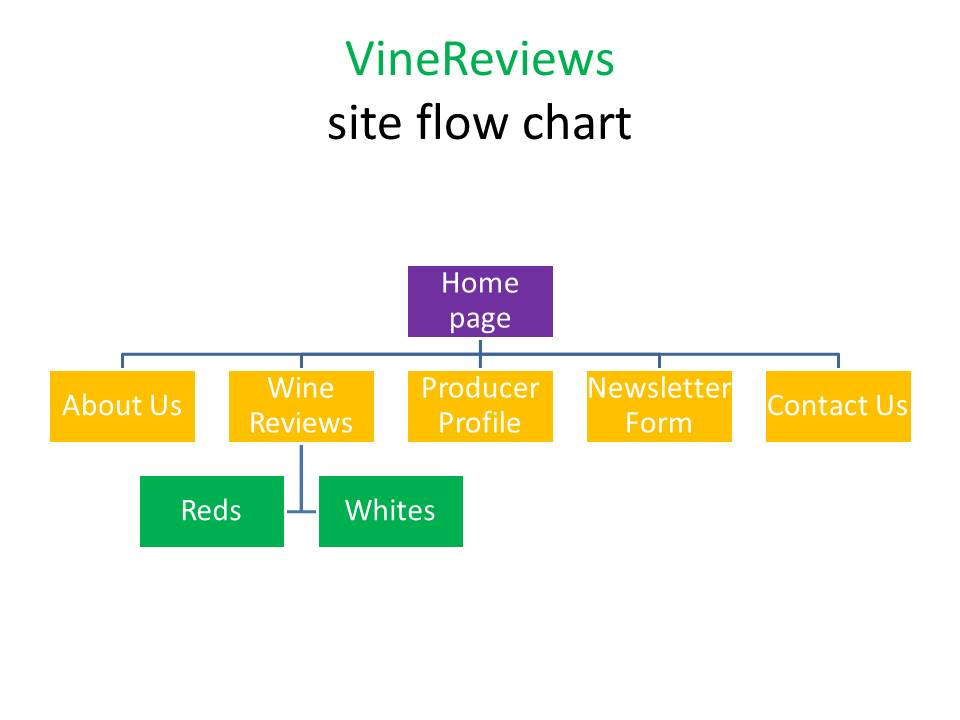

We Love Local!
VineReview is the result of a partnership between winemakers in Missouri and Kansas, purveyors and "locavores" anxious to spread the word about the wonderful wines being produced in America's heartland.

VineReview is the result of a partnership between winemakers in Missouri and Kansas, purveyors and "locavores" anxious to spread the word about the wonderful wines being produced in America's heartland.